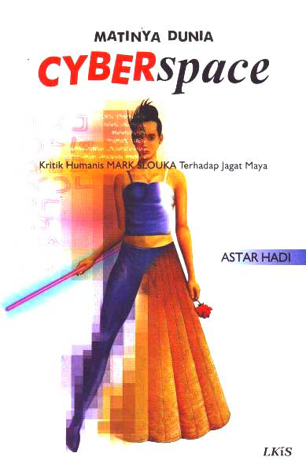

GLOBALISASI media massa membentuk visi yang hampir seragam bagi penikmatnya. Berita pagi ini dari kawasan Amerika, mungkin telah dinikmati orang kota di Indonesia, bahkan orang pedalaman sekalipun.
Berita tidak lagi bersifat eksklusif milik kelompok pembentuk visi media itu sendiri, tapi telah menjangkau entitas seluruh lapisan masyarakat ke dalam satu entitas "perkampungan global" (global village, dalam bahasa McLuhan). Dan kira-kira seperti inilah yang terjadi dalam globalisasi media di era posmodern ini.
Media posmodern menjadi wadah hegemoni opini publik. Tafsiran atas fenomana atau realitas tergantung pada vested interest institusi media yang mengatur arus opini publik.
Pembentukan visi subjektif media pada fenomena atau realitas demikian kuat, sehingga praktis publik mengkonsumsi kebenaran menurut visi subjektif sang penafsir. Semua sektor kehidupan ditafsirkan sesuai selera penafsir, bahkan sampai pada wilayah yang paling sakral.
Lewat permainan bahasa, kepentingan sang penafsir tertutupi, namun tetap mampu mengendalikan alam bawah sadar yang mengkonsumsi.
Susunan kata dalam bahasa media yang rapi mampu menyampaikan ide-ide skenario opini global. Susunan yang rapi ini diusahakan sedapat mungkin mengubah persepsi tentang fenomena atau realitas, dan sedapat mungkin membentuk visi baru. Maka terbentuklah sebuah jaringan budaya ciptaan media.
Masyarakat sebagai konsumen media secara tidak sadar telah menjadi produk. Kata "produk" di era posmodern dewasa ini tidak hanya menunjuk pada barang atau jasa, tapi sekaligus manusia buatan media.
Citra, tanda-tanda, dan gaya hidup ciptaan media merupakan menu sehari-hari masyarakat sebagai komoditas primer untuk memenuhi hasrat penampilan diri, yang tentunya berkaitan erat dengan fenomena budaya massa/budaya pop dalam diskursus kritik budaya akhir-akhir ini.
Pencet saja tombol ON pada layar monitor komputer anda, maka lalu lintas informasi dan komunikasi yang penuh "polusi" telah menanti, menjemput dan mengajak anda untuk berbagi ekstase gado-gado sosial, budaya, politik dan (terutama) juga "seks" yang terbuka untuk anda lahap sekenyang-kenyangnya sampai perut pengetahuan dan imajinasi anda buncit oleh hiruk-pikuknya.
Sebuah ironisme budaya massa. Tentu saja, ya! Mengapa? Kita telah disuguhkan sebuah "wisata kuliner" di setiap ruang real time yang menunya terdiri atas histeria mesin hasrat (desiring machine) massa yang terus di-upgrade, di-update, untuk memenuhi mitos be and do it your self. Proses internalisasi (downloading) budaya global ke dalam langgam lokalitas paling subtil telah menjadikan yang global menjadi lokal dan sebaliknya secara terus menerus.
Budaya, dengan demikian, merupakan sebuah lalu-lintas produksi, jejaring konsumsi, percepatan komoditas-komodifikasi, alih-alih, menjadi nilai, karakter, identitas, yang membedakan (diferensiasi) tatanan masyarakat secara sosiologis.
Dan, tentu saja, kalaupun ada yang harus ditunjuk sebagai penyebab dominan perkembangan budaya massa, tak lain itu adalah perkembangan teknologi yang memicu pertumbuhan ekonomi industri (baik kapitalis maupun sosialis), proses urbanisasi, dan perkembangan media massa (Budiman, 2002: 56).
Dalam perkembangan selanjutnya, fenomena globalisme budaya massa/budaya pop dalam realitas media posmodern yang ditandai dengan masuknya sebuah medium baru (Internet). 
Pertumbuhannya dipicu oleh perkembangan revolusioner di lingkungan bisnis komputer personal ini telah menggantikan peran media massa lama seperti televisi, radio dan media cetak.
Teknologi ini memiliki peran sangat signifikan dalam merengkuh seluruh fasilitas yang ada pada media sebelumnya. Gabungan seluruh isi media, termasuk teks, gambar bergerak, citra audiovisual dan realitas virtual bisa hadir sekaligus di dalamnya.
Di sinilah mengapa kemudian term budaya pop (posmodernisme) menjustifikasi titik temunya yang paling "rasional"dalam ruang lingkup media massa Internet. Artinya, seperti yang dijelaskan John Urry (Budiman, 1997: 180-181), bahwa term posmodernisme menunjuk pada sebuah sistem tanda atau simbol yang spesifik, baik dalam ruang maupun waktu.
Urry melihat posmodernisme sebagai sebuah proses dediferensiasi, di mana masing-masing lingkaran aktivitas sosial, terutama budaya, diruntuhkan dan merasuki satu sama lain. Dan pada gilirannya, menurut Urry, yang paling mencolok, proses ini paling banyak melibatkan pertunjukan visual serta permainan.
Tampaknya apa yang diasumsikan Urry di atas memperlihatkan terjadinya proses globalisasi kesatuan budaya berupa terciptanya budaya massa atau budaya populer yang melibatkan pengaruh besar media massa posmodern dalam mengatur trik-trik visual, permainan tanda-tanda, citra, dan apa yang ditawarkan media Internet dalam ruang cyberspace serta realitas virtual yang dihasilkannya.
Pada titik ini, mengikuti Marshall McLuhan dalam tesisnya tentang global village, mengisayaratkan bahwa budaya dalam realitas posmodern telah menemukan signifikansi teoretis dan praktisnya pada apa yang dihasilkan oleh komputer, baik dalam fungsinya sebagai mesin komputasi maupun sebagai instrumen komunikasi dan informasi (Internet) dengan jangkauan yang sangat luas.
Komputer telah berkembang melebihi fungsinya sebagai alat bantu, menjadi mesin-mesin produsen mitos yang dikonsumsi masyarakat kontemporer. Tidak hanya dilihat sebatas the modernist computational aesthetic yang merupakan perpanjangan dari mesin hitung, internet telah menjadi simulasi (budaya) posmodern sebagai media simulasi, navigasi, dan interaksi.
Permasalahan budaya massa memang sedemikian kompleksnya. Ia meliputi bagian-bagian terkecil dari fenomena budaya yang demikian rumit, termasuk seni populer dan lainnya.
Dengan kata lain, bukan dalam proses mereduksi peran dari media massa yang lain, tetapi sekurang-kurangnya, internet dianggap paling mampu memberikan efek lain terhadap perselingkuhan budaya secara massif.
Wassalam.